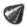

1936年1月1日
停止
1速
2速
3速
4速
5速
石油:
500
アルミ:
500
ゴム:
500
タングステン:
300

鋼材:
1000
クロム:
300
石炭:
800
研究ツリーに戻る
生産可能な装備 (研究完了済み)
旧式装備を表示
生産ライン (無制限)
割り当て済み工場:
0
個
現在稼働中の生産ラインがありません
 アルミ: 500
アルミ: 500 ゴム: 500
タングステン: 300
ゴム: 500
タングステン: 300 クロム: 300
石炭: 800
クロム: 300
石炭: 800